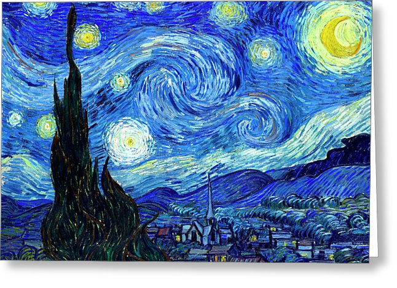
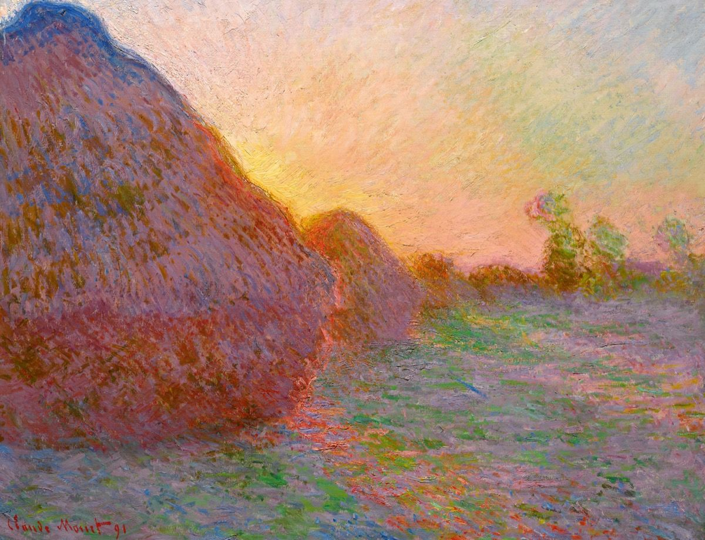
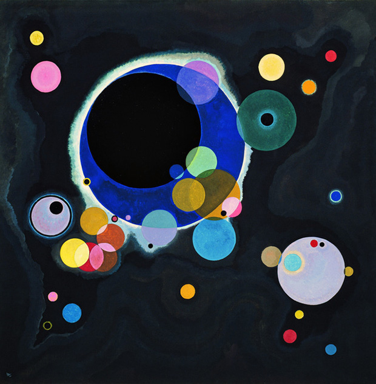

My inspiration

Van Gogh
Vincent Willem van Gogh was a Dutch post-impressionist painter who is among the most famous and influential figures in the history of Western art. In just over a decade he created about 2,100 artworks, including around 860 oil paintings, most of which date from the last two years of his life.

Monet
Oscar-Claude Monet was a French painter, a founder of French Impressionist painting and the most consistent and prolific practitioner of the movement's philosophy of expressing one's perceptions before nature, especially as applied to plein air landscape painting.
